Art 🎨#
This section is dedicated to the beauty that emerges when science and art intersect. 🌌🔬 The images showcased here are not merely data visualizations but also representations of the aesthetic possibilities inherent in scientific exploration. 🖼️ Many of these images were created during simulations or as part of the process of analyzing complex results. Through the application of diverse color scales 🌈 and visualization techniques, they transcend their original purpose, revealing patterns, shapes, and contrasts that evoke a sense of wonder. 🌟
Each image tells its own story:
Some depict natural phenomena 🌍—unveiling the intricate, hidden structures of systems modeled through simulations.
Others are abstract compositions 🎭, born from the interplay of mathematical models, computational algorithms, and artistic color mappings.
This collection serves as a reminder that science is not just a pursuit of knowledge 🔎 but also a source of inspiration and creativity. By sharing these works, I aim to celebrate the unexpected beauty that emerges when we look at science through the lens of art. 🌠💡
Art 1#
{kind=link}
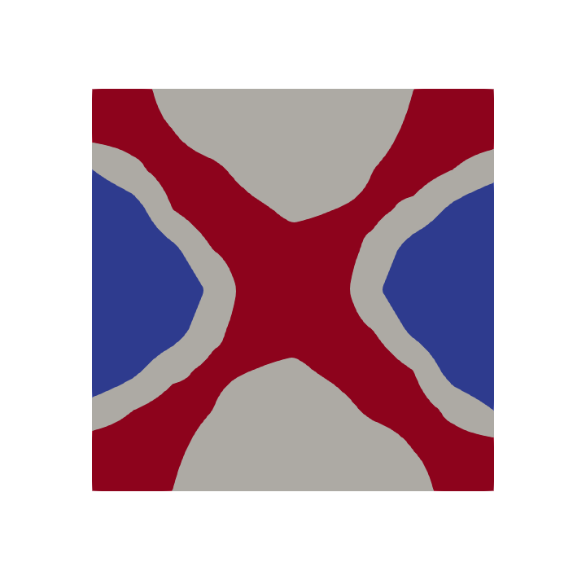
Art 2#
{kind=link}
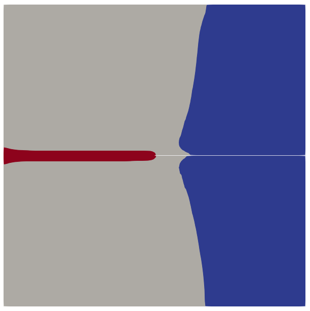
Art 3#
{kind=link}
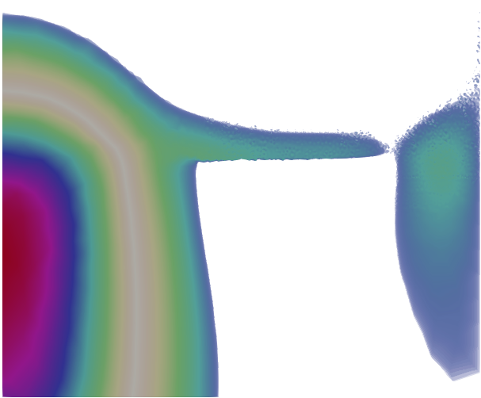
Art 4#
{kind=link}
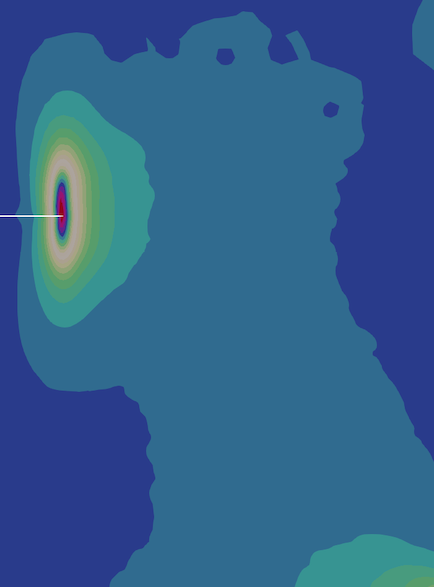
Art 5#
{kind=link}
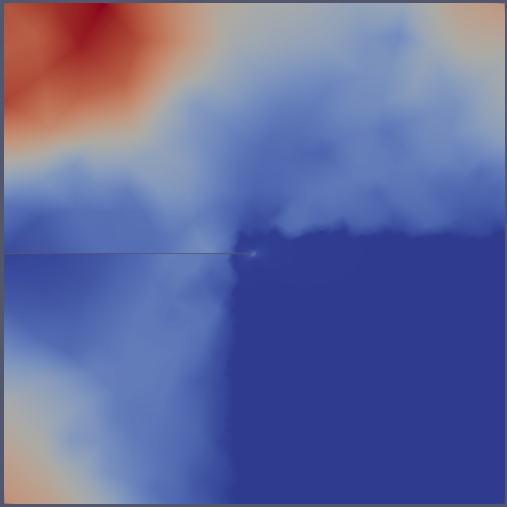
Art 6#
{kind=link}
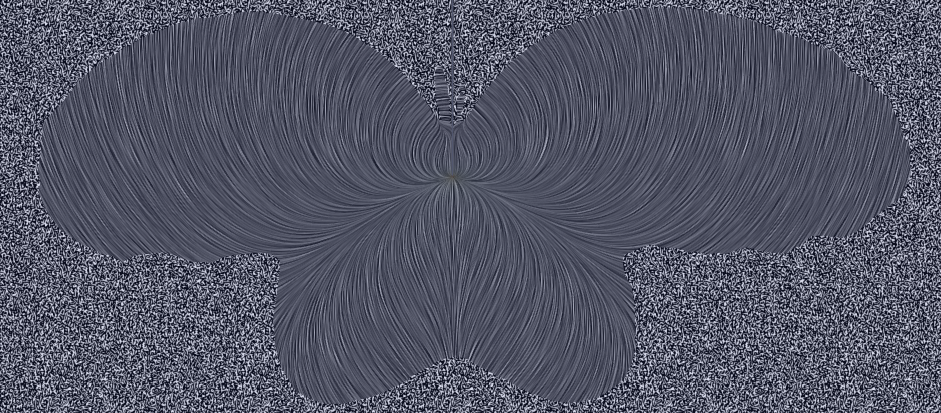
Art 7#
{kind=link}
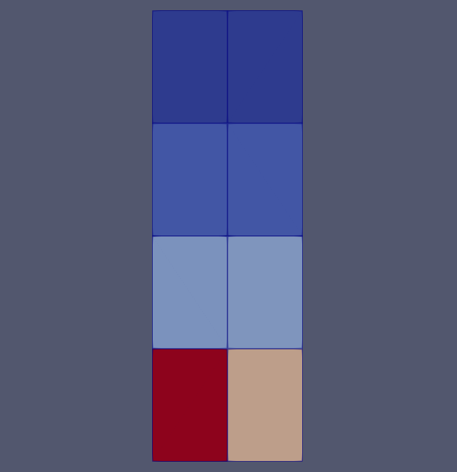
Art 8#
{kind=link}
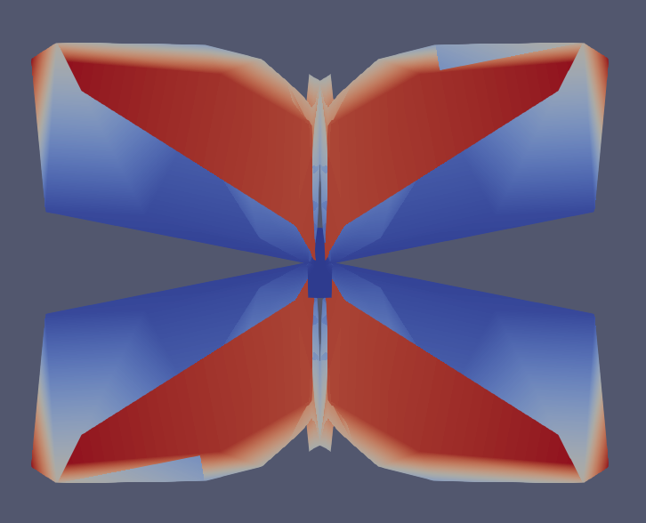
Art 9#
{kind=link}
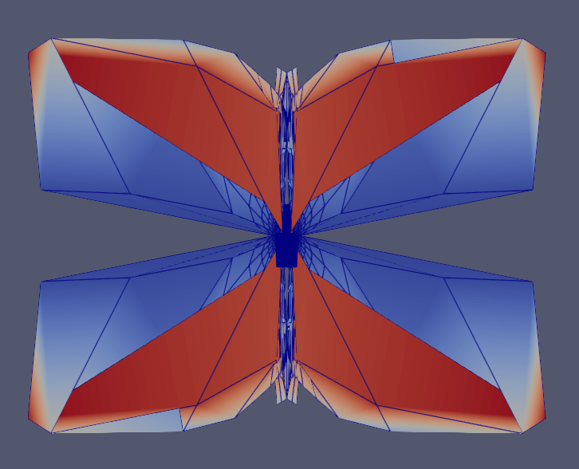
Art 10#
{kind=link}
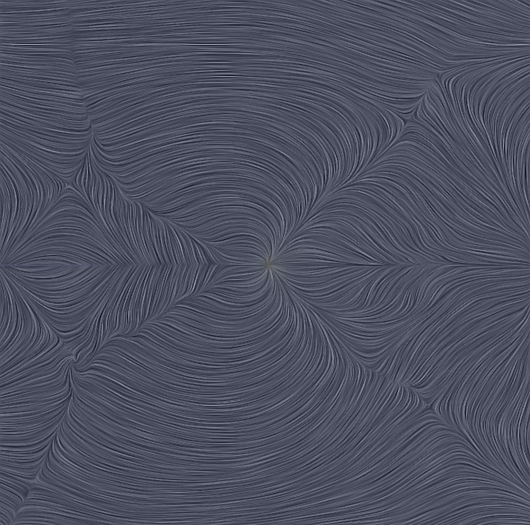
Art 11#
{kind=link}
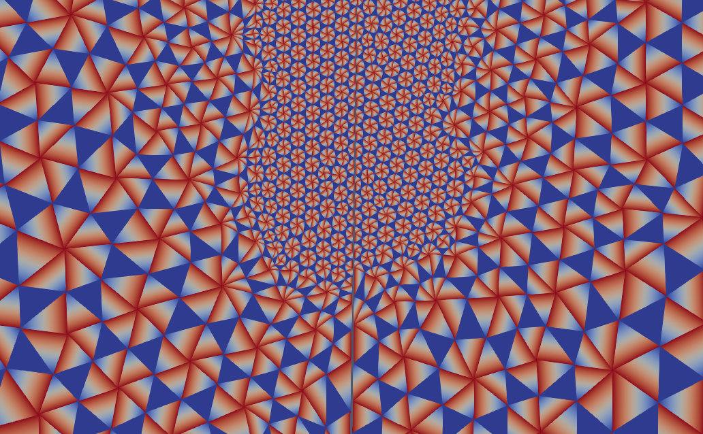
Art 12#
{kind=link}
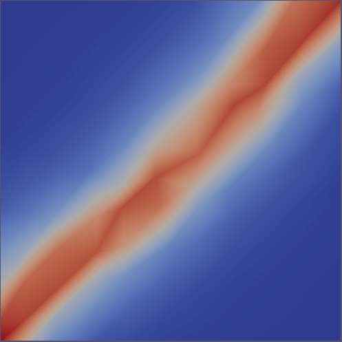
Art 13#
{kind=link}
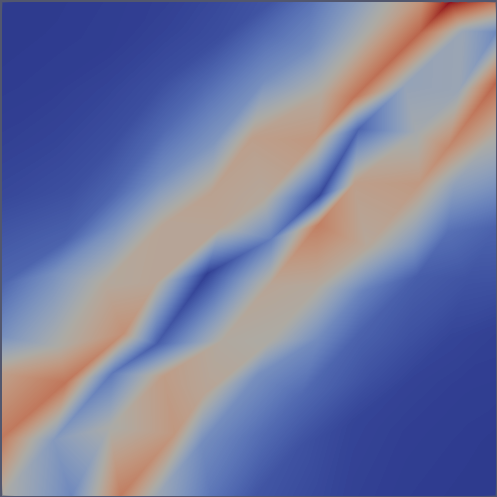
Art 15#
Art 16#
{kind=link}
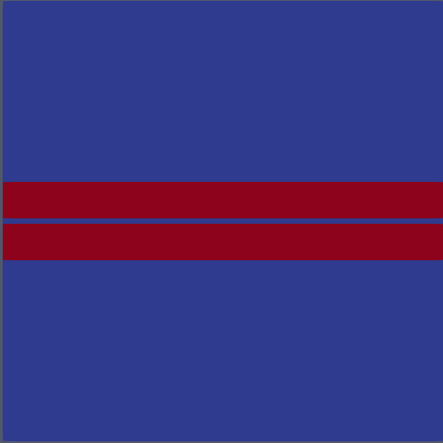
Art 17#
{kind=link}
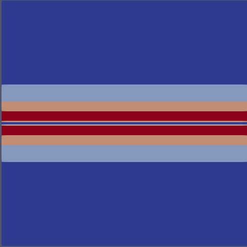
Art 18#
{kind=link}
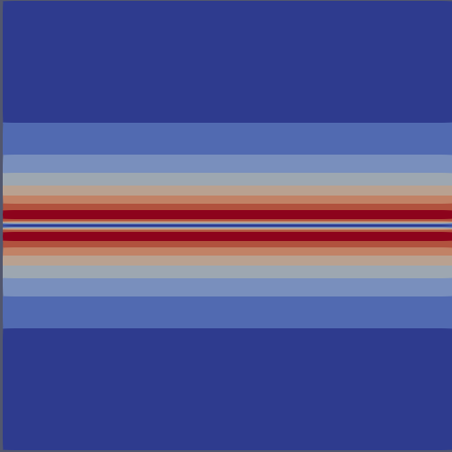
Art 19#
{kind=link}
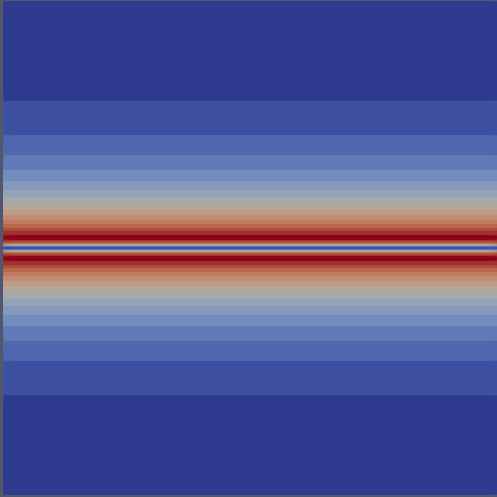